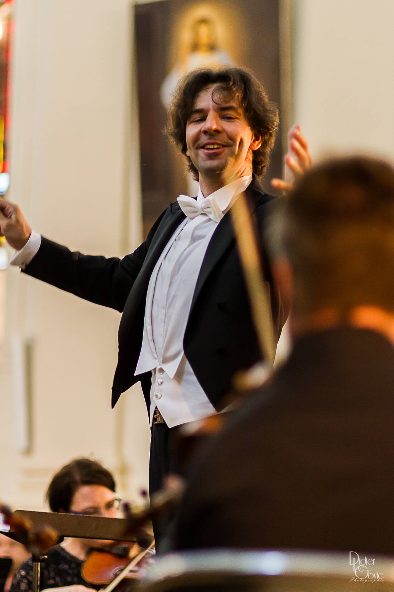

Берлинсезон 2026/27
ГеоргийГромов
Пианист, дирижёр, коуч PCC ICF. Концерты, лекции и мастер-классы на пяти языках.
Образец B «Программа вечера». Только первый экран и раздел «Музыка». Фото за роялем и с конференций пока нет, они встанут после присылки.
Пианист, дирижёр, коуч PCC ICF. Концерты, лекции и мастер-классы на пяти языках.

Георгий Громов выступал в Тонхалле Цюриха, Большом зале Московской консерватории, Seoul Arts Centre и Концертхаусе Берлина, на фестивалях в Вербье и Klavier-Festival Ruhr. Играл с оркестром «Новая Россия» Юрия Башмета, Литовским камерным оркестром под управлением Саулюса Сондецкиса, Цюрихским камерным оркестром.
Его репертуар держится на классике и романтизме. Все 32 сонаты Бетховена и все его концерты, все 27 концертов Моцарта, все концерты Рахманинова. Больше 80 сольных программ и больше 50 концертов с оркестром.
Двенадцать международных премий, среди них Prix d'Oslo1 и Гран-при в Сеуле. Московская консерватория, класс Элисо Вирсаладзе; Берлинский университет искусств, Клаус Хельвиг. В 2018–2020 годах художественный руководитель и главный дирижёр Оренбургской филармонии.
Его исполнение всегда показывает собственное отношение к музыке, основанное на глубокой эрудиции, чуткости и поэзии.Николай Луганский · победитель Конкурса имени Чайковского
«Меня глубоко впечатлили сильная музыкальность и искренность пианизма Георгия. За этим талантом стоит следить».Барри Дуглас · победитель Конкурса имени Чайковского
«Один из самых одарённых молодых российских пианистов. Меня лично очень впечатляет его глубокий, многогранный талант».Элисо Вирсаладзе · профессор Московской консерватории
«Громов играет Бетховена так, как его и нужно играть: сильно, со страстью, но прежде всего в настоящем бетховенском духе».livekritik.de · о «Буре», март 2012
«Блестящий технически, безупречный музыкально, с глубоким и подлинным пониманием исполняемой музыки».livekritik.de